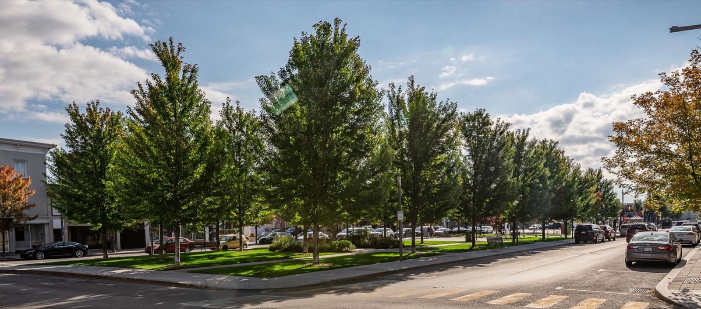

La capitale culturelle de Lanaudière, vibrante de musique, d’art et de vie de centre-ville. RE/MAX D’ici vous présente le guide de référence pour s’installer à Joliette en 2026.
Trois calculateurs rapides pour estimer une transaction à Joliette avec les données fiscales 2026 et les règles officielles du Québec.
Joliette est le cœur urbain et culturel de Lanaudière. Ville-centre de la région, elle rayonne grâce au Festival de Lanaudière, l’un des plus importants festivals de musique classique au Canada, et au Musée d’art de Joliette, l’un des plus importants musées régionaux du Québec.
Son centre-ville animé, ses rues arborées, sa cathédrale et la rivière L’Assomption qui le traverse donnent à Joliette une vie de centre-ville à taille humaine. Cafés, terrasses, commerces et institutions de santé et d’éducation y sont concentrés.
Pôle de services pour toute la région, Joliette regroupe emplois, écoles, cégep et hôpital. On y trouve la vie de centre-ville d’une ville-centre.

La capitale culturelle de Lanaudière
Culture, services et vie de centre-ville : Joliette offre les services d’une ville-centre au cœur de Lanaudière.
Festival de Lanaudière, Musée d’art de Joliette, théâtre et galeries font rayonner la ville bien au-delà de la région.
La rivière L’Assomption traverse la ville ; parcs urbains, patinoire et berges en font le décor du quotidien.
Hôpital, cégep, écoles et grands pôles commerciaux : Joliette est la ville-centre de tout Lanaudière.
Autoroute 31, route 158 et service d’autocars relient Joliette à Montréal et à la région.
Activité résidentielle à Joliette selon les dernières statistiques publiées par Centris. Les chiffres comparent le trimestre courant à la même période l’an dernier, et présentent le cumul des quatre derniers trimestres.
| Indicateur | 3ᵉ trimestre 2026 | Cumul 4 derniers trimestres | ||
|---|---|---|---|---|
| Valeur | Variation | Valeur | Variation | |
| Ventes Propriétés vendues durant la période | 43 | ↑ +2 % | 208 | ↑ +8 % |
| Nouvelles inscriptions Propriétés ajoutées au marché | 78 | ↑ +23 % | 285 | ↑ +16 % |
| Inscriptions en vigueur Propriétés actuellement à vendre | 69 | ↑ +38 % | 59 | ↑ +18 % |
| Volume résidentiel Valeur totale des transactions (en milliers $) | 20 838k$ | ↑ +3 % | 96 232k$ | ↑ +16 % |
Concerts, festivals, marchés publics, activités familiales : Joliette tient à jour le calendrier officiel de tout ce qui se passe près de chez vous. Consultez-le pour ne rien manquer.
Joliette vit au rythme de la rivière L’Assomption et de son centre-ville animé, entre parcs, patinoire et places publiques.
Ville-centre de Lanaudière, Joliette rejoint Montréal par l’autoroute 31 et la 40, et dessert toute la région environnante.
| Destination | En voiture | Transport collectif | Distance | Accès routier |
|---|---|---|---|---|
| Centre-ville de Montréal | 55 – 70 min | Autocar | 75 km | A-31 / A-40 |
| Repentigny | 30 – 40 min | — | 45 km | A-31 / A-40 |
| L’Assomption | 20 – 25 min | — | 25 km | R-343 |
| Lavaltrie | 20 – 25 min | — | 25 km | R-131 / A-40 |
| Terrebonne | 35 – 45 min | — | 50 km | A-31 / A-40 |
| Ville | Taux (par 100 $) | Taxe foncière | Tarifs fixes | Total sur 500 000 $ |
|---|---|---|---|---|
| Joliette | 0,549 $ | 2 745 $ | 376 $ | 3 121 $ / an |
| L’Assomption | 0,5896 $ | 2 948 $ | 709 $ | 3 657 $ / an |
| Saint-Jacques | 0,555 $ | 2 775 $ | 540 $ | 3 315 $ / an |
| Lavaltrie | 0,6398 $ | 3 199 $ | 745 $ | 3 944 $ / an |
Calcul pour une unifamiliale évaluée à 500 000 $ : taxe foncière (taux × 5 000) + tarifs fixes annuels par logement (eau, égouts, matières résiduelles, etc. selon la ville). Des taxes de secteur peuvent s’ajouter selon l’adresse.
Source : Ville de Joliette, Taux de taxation 2026. Taux résidentiel 0,549 $ (baisse vs 2025 reflétant le nouveau rôle, +45 % d’évaluation moyenne). Tarifs fixes par logement : eau 154 $ + assainissement 77 $ + matières résiduelles 145 $. Droit de mutation : 3 % au-delà de 500 000 $ (confirmé, joliette.ca, seuils inférieurs indexés 2026).